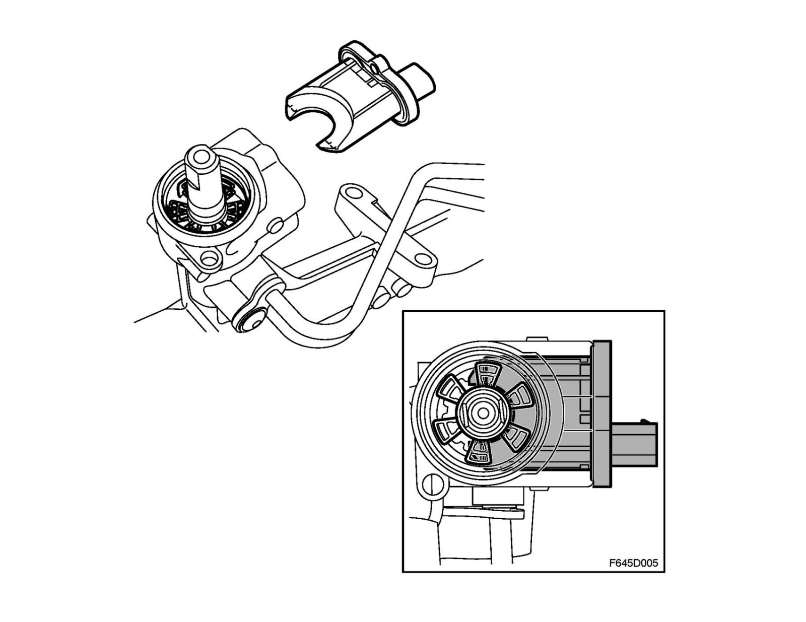
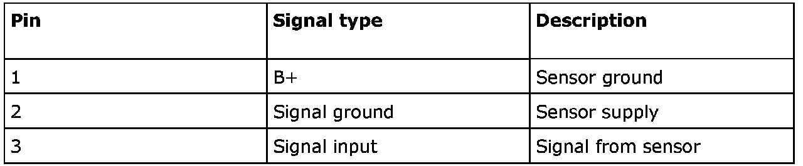
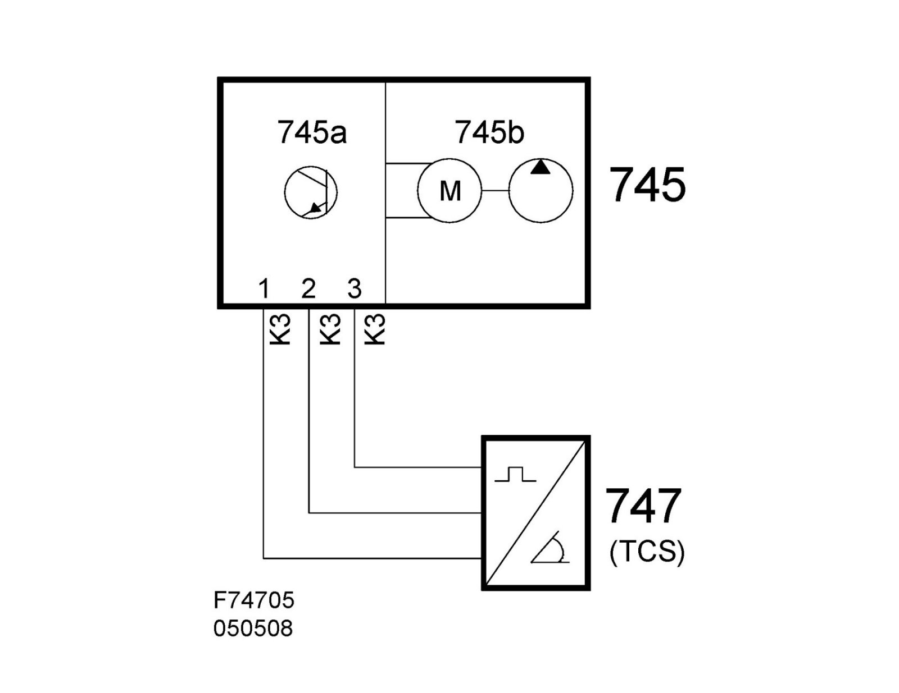

Steering Angle Sensor: Description and Operation
Steering wheel angle sensor, power steering (747)Location
Steering wheel angle sensor, power steering (747)

Main task
Gives information on the steering wheel speed.
Type
The control valve has six segments each displaced 60 degrees. The sensor is inductive and is mounted in the steering gear housing.
Connection

The sensor is supplied power from pin 1 and ground on pin 2 of the EHPS control module. Pin 3 provides information on steering speed via a 500 Hz PWM signal. The pulse ratio carries information on steering speed - 12.5% to 87.5%, which corresponds to 0 degrees/second to 60 degrees/second.
